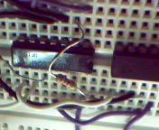
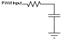

Let's Build a Cool Linux Toy
By Pramode C.E.
Many of us make a living out of Linux - but, if somebody asks us why we are so crazy about it, one common answer would be `fun'. Playing with Linux is lots of fun - with the added benefit that, most of the time, you end up learning a lot. Recently, I happened to come across a nice book which tries to emphasize the `fun' aspect of Linux - it describes several small `projects' (a jukebox, a picture frame, etc.) that a moderately experienced Linux user may be able to implement on her own. One of the projects involved interfacing with a temperature-sensing element and putting up the temperature value on a Web page (or including it in your email signature - and any other crazy stuff which you can imagine!). The only trouble was that, in the part of the world where I live, walking up to an electronics store and asking for an integrated, 1-wire temperature-sensing element is more likely to yield a hard stare than anything else. Smart sensors that can be directly interfaced to the PC with the minimum of fuss are seldom available off-the-shelf - you will mostly have to `roll your own' - which adds to the fun and excitement. With a low-cost general purpose microcontroller like the PIC16F628, bits and pieces of cheap, commonly available electronics components, and LOTS of code, you can build many interesting `toys' and hook them up to your Linux machine - a really great learning experience for the hardware hacker who wants to learn Linux, or the Linux hacker who wants to learn a bit of hardware. This article describes how I went about building my temperature-sensing project - amateur Linux/hardware hackers might find some of the ideas useful when they start building things on their own.
Get a PIC micro, and set it up to work with Linux
This is the first step. Microchip PIC controllers are commonly available. If you are like me, working with a soldering iron for more than 10 minutes would drive you crazy - so you have to choose the right kind of PIC - the one that can be programmed with the simplest possible circuit (connected to the PC parallel port), preferably with a 5V supply. Look no further than the PIC16F628. This is a cool device that has lots of peripherals (except the ADC - but then, we can roll our own crude analog-to-digital converter with the comparator and pulse width modulation facilities offered by the PIC) and supports a `Low-Voltage Programming Mode'. I found a nice little circuit (the simplest circuit, and one that works perfectly, out of the dozens I have seen on the Net) designed by Jim Paris for a microcontroller programming laboratory at MIT. Here is the circuit:
[diagram]
I assembled the circuit on a breadboard for testing in a few minutes' time.

Jim Paris has designed a program (called `jimpic') for burning machine code onto the flash memory of the microcontroller. It is available for download from here. I wrote a simple assembly language program, converted it into machine code with the help of the `gpasm' assembler available as part of the GNU PIC Utilities Project and burned it onto the micro by running `jimpic' with the `-b' option.
A Quick Introduction to PIC programming
A nice thing about the PIC is that, if you have some background in general microprocessor architecture and assembly language programming, you can become productive with it in just about one or two hours' time. The instruction set is very compact (35 instructions) and sufficient for most simple bit-twiddling tasks. The PIC16F628 packs a decent 224 bytes of data memory with 2K of program (code) memory. The peripherals include general-purpose digital I/O ports, three timers, two analog comparators, on-chip voltage reference module, Universal Synchronous-Asynchronous Receiver Transmitter (for serial communication), and Capture-Compare-PWM module. Special CPU features include a watchdog timer, brown-out detect circuitry, and an internal RC oscillator (so that you won't be needing an external crystal if you aren't too concerned about precise timing).
The general purpose data RAM begins at address 0x20 (the locations below this are Special Function Registers - basically memory mapped I/O ports, control registers etc.). Here is an elementary assembly language program, which simply stores the value 0 into the accumulator (the `W' register, in PIC terminology).
(Remove the .txt extension if you download the listing. It's there only to ensure browsers display it properly.)
We will now assemble the file:
gpasm -a inhx8m a.s
The result is an Intel hex format file, which can be given to `jimpic' for burning. Each line of the hex file contains a few bytes of machine code, the address at which the machine code is to be stored (in the flash memory of the microcontroller), some kind of checksum, and some other information. Here is the hex file generated by running `gpasm' over our assembly language program:
:020000000030CE :02400E00983FD9 :00000001FF
The first line of our program tells the assembler that machine code is to be generated for the PIC16F628. The second line includes a file (available with the `gputils' distribution) that contains lots of symbol definitions. The third line, a __CONFIG directive, tells the assembler what special features of the microcontroller (say, the Watchdog timer) should be enabled/disabled by writing bit patterns to a `magic' `configuration word' within the PIC; _WDT_OFF means we don't want the watchdog to be enabled, _INTRC_OSC_NOCLKOUT means we are going to use the internal oscillator to provide the timing signals necessary for program execution. You will have to refer to the 16F628 datasheet to know more about these configuration bits. The fourth line is the only proper assembly language instruction in the program - it moves the `literal' (constant) value 0 to the `W' register. Note that each line begins with a tab.
Lighting up an LED
Here is a program that lights up an LED connected to the RB0 pin of the microcontroller:
PORTB is an eight-bit port - the direction of each pin (i.e., whether the pin is to act as input or output) is controlled by individual bits of the TRISB register - if a TRISB bit is set, the corresponding PORTB pin is input - otherwise it is output. The PIC has the concept of `banked' addresses, which is rather confusing to the beginner. (It's a headache even if you are an `experienced' developer.) You visualize `banks' of special function registers - the STATUS register is the same across all the banks while the TRISB register is available only in bank 1. You are by default in bank 0. To access TRISB, you have to `switch over' to bank 1. This is by setting the RP0 bit of the status register. (When you read microcontroller manuals, you will see that not only are the control registers given special names, even the individual bits are named. Header files available with the development kit for the microcontroller map these symbolic names to the numbers given in the manual, making the life of the assembly programmer a bit easier.) The `bsf' instruction (bit set f - `f' represents the fact that the number that comes as the operand for the instruction represents a memory address or a special function register and not a `literal') takes two operands - the first one being the address of a RAM location or a special function register, and the second, a bit number. The `movwf' instruction copies the contents of the `W' register to the memory location whose address is the operand of the instruction.
Building a `running' circuit
After assembling and burning the above program, we are ready to see it in action. The running circuit can be built in a jiffy - place +5V on the VDD pin of the PIC (pin 14), connect Vss (pin 5) to circuit ground, connect MCLR (pin 4) to +5V through a 2K resistor, connect the LED between RB0 and Gnd with a current limiting resistor of say 1K in series - and that's all. You should see the LED lighting up as soon as you apply power. Your next attempt will be to make the LED blink - for that you will have to read a little bit more about the PIC instruction set - the manual will come in handy at this juncture.
Debugging tips
Here are some things that I have found handy while debugging:
- Check the power supply
- Don't jump into conclusions that the hardware is wrong - you might have misinterpreted the datasheet, your program logic might be wrong, or worse still - the data sheet might be WRONG. Which brings us to the next rule, which is:
- Always read the manufacturers' errata - if they have one. The 16F628 datasheet contains some errors - especially concerning writes to EEPROM data memory and the behavior of the MCLR pin in low-voltage programming mode.
- Don't think the hardware will never malfunction - for example, the PIC might consume larger current when writing to the internal data EEPROM; your battery-powered supply might not be able to deliver the required current, and your program will misbehave. If you have an external crystal, it might not be working properly, and the micro might not be getting its clock.
- Google Groups is your friend - use it wisely. Search the archive; somebody might have experienced the same problem before. Post a message if you feel that your problem is something `original'.
The temperature sensor interfacing project
The LM35 is a commonly available calibrated temperature sensor that converts temperature (in degrees Celsius) to voltage - each degree rise in temperature results in 10mV rise in output voltage. It's a three-pin device - Vcc, Gnd, and voltage output. You can get the datasheet from here. Say the current temperature is 23 degrees Celsius; the voltage output would be 230 millivolts.
The question is, how do you convert this voltage to a digital value? The easiest way would be to use a commodity analog-to-digital converter, and interface it to the printer port. Another solution would be to use a PIC with a built in ADC (say the 12F675). The third would be to use some of the peripherals available in the 16F628, write some code, and build a crude ADC of your own. As I had explored the first two options a lot in the past, I thought of trying out the third one.
Two peripheral features of the PIC are of interest to us here - one is the builtin PWM module (Pulse Width Modulation), which is capable of generating, in, hardware, a continuous stream of digital on-off pulses whose duty cycle can be varied simply by storing certain numbers in specific special function registers. Once the PWM module is initialized to generate a pulse train of a specific duty cycle, it will keep on doing so without any software intervention - our program can do something else.
The PIC is also equipped with two analog comparators, which can be configured in a variety of ways. Let's say we are using just one of the comparators. Two PORTA pins can be programmed to accept voltage levels and transmit them to the Vin+ and Vin- pins of the comparator. The comparator output is high if the Vin+ voltage is greater than the Vin- voltage, and low otherwise. The output can be made available on another PORTA pin, or it can be simply read from a particular bit of the Comparator Control Register, CMCON.
Filtering PWM pulses

The figure shows a PWM pulse (off OV, on +5V) of period T being fed to an RC circuit (R*C >> T). If the on-off periods are equal, the output seen across the capacitor will be a constant DC level of magnitude 2.5V. Electrical engineering text books should give you the reason why it is so - or, if you are not very sure of the math involved (as I am), play with some R and C values until you get the desired effect. Now what if you feed a PWM pulse whose on-time is less than T/2? You will see that the output is again a DC level, but the magnitude has come down proportionately. What if you increase the on-time? Again, the output is a DC level, only thing is the magnitude has increased proportionately. Now you have a cool way to implement a DAC, a digital-to-analog converter. Say you want to generate a voltage of 0.449V. What if you program the PIC so as to generate a PWM pulse train of period 256 microseconds and on-time 128micro. The output voltage would be 5V*(128/256.0) = 2.5V. Now, what if the on-time is 23 micro seconds? The output is 5V*(23.0/256) = 0.449V. (I use Python to do these quick-and-dirty calculations. It's one of my favourite uses of this great language.) The on-time can be altered easily by writing some numbers to two registers, CCPR1L and CCP1CON. A pure digital way to generate analog voltage!
From DAC to ADC
What has all this got to do with converting the LM35 sensor's analog voltage output to a numerical value? Well, a DAC, together with a comparator, builds up an ADC. How? Say the maximum and minimum temperatures at your place of residence can never go above/below 45 degree Celsius and 20 degree Celsius. So the sensor's output will always be between .45V and .2V (remember, 10mV per degree change in temperature). We start generating a PWM signal of period 256 microseconds. The RC-filtered output is fed to Vin+ of the comparator, and the sensor's output is fed to Vin-. Let's say the sensor output is .3V. If the PWM on-period is 23 microseconds, the filtered DC level would be 5*(23.0/256) = 0.449V. So, Vin+ is greater than Vin-, and the comparator output (as obtained from a bit of the CMCON register) is high. Now, we start bringing down the on-time. At a certain point, Vin- will go above Vin+, and the comparator output drops to zero. The magnitude of the on-time at this point is a true representation of the analog value of the sensor output. We communicate this number to a program running on the Linux box through a serial link. You can download the PIC assembly language program that does all these tricks:
Instead of performing a `linear' search from the high boundary down to the lower one, we can think of generating a voltage that lies in the middle of this range and comparing it with the sensor output. If the comparator says that the sensor output is higher, we can repeat the same procedure on the upper half. This is the classical `binary search' applied to solve a hardware problem! Horowitz and Hill, in their book The Art of Electronics, have oscilloscope traces of this binary search in action! Computer programmers should always show a good amount of skepticism towards code that claims to do binary search - the algorithm looks deceptively simple - but is in fact not very easy to implement correctly.
Back to Linux
The PIC micro sends the temperature data it has gathered out through a port pin (RB2) in a serial manner - this port pin is directly connected to the receive pin of the PC serial port. What remains is to write a program that will read this data and process it in some manner. Even though the RS-232C serial communication standard defines an `on' voltage to be between -3 and -12V and an `off' to be between +3 and +12, I have been able to get satisfactory results using the 0 and 5V logic outputs from the PIC port pin - if it doesn't work out for you, you will have to place a device like the MAX232 between the PIC port pin and the PC serial port receive pin.
Interfacing with the serial port
Let's look at the simplest way to interface an external circuit to the serial port. (We won't be sending any data out through the PC serial port - that would make the circuit a wee bit more complex.) Pin number 2 of the 9-pin PC serial port connector is the receive pin, 3 the transmit pin, and 5, Ground. Let's say the PIC is sending data out through its RB2 pin at 9600 bits per second, 8N1 (8 data bits, no parity, 1 stop bit) format. The UART that controls the PC serial port should be programmed for this particular baud rate and data format. This can be done by writing magic bit patterns to certain control registers. Once that is done, our program can keep on polling a bit of the UART status register to know whether a new data byte has arrived. Here is the code listing:
The program has two disadvantages. One, it is using low-level I/O calls, which, if they are to work properly, should be preceded by an iopl() call. Only the superuser can call iopl() successfully - so the program should run under root privilege. We are wasting CPU time when we keep polling for data in a tight loop; that's another big problem. Both are solved by not directly interacting with the hardware - we can make use of system calls to talk to the serial driver within the Linux kernel - which will do all the low level stuff needed to manage blocking, interrupt driven I/O.
Serial I/O in Python
The Python `termios' module can be used for doing serial comm at a higher level. Isaac Barona Martinez has written a simple wrapper over `termios'. It is called uspp and is available for download from here. Using this module, reading from the serial port is a breeze:
from uspp import *
# COM1 is initialized at 9600 baud. The
# default data format is 8N1
s = SerialPort("/dev/ttyS0", None, 9600)
s.flush() # discard unread bytes
print ord(s.read()) # s.read() returns a one-character
# string. We convert it into its ascii
# value
Once you get this far, let your imagination run riot!
- Write a simple server that accepts connections over the network and transmits the current temperature
- Write a program that keeps on reading the temperature at say, half-hour intervals. The temperature reading, together with some stupid message like `Oh - it's burning hot here' can be placed at the end of your `.signature' file!
- Another idea would be to use something like the Python `ftplib' to upload the temperature reading to your Web server periodically.
Acknowledgements
Thanks to Christopher Negus and Chuck Wolber for a really cool book!
Thanks to Jim Paris, Ariel Rodriguez and Sheldon Chan for the excellent `jimpic' hardware and software. As I had mentioned earlier in this article, I find it to be the easiest way to get started with PIC programming under Linux. Thanks to Isaac Barona Martinez for uspp, which simplifies serial programming a lot.
Conclusion
There are two excellent documents that describe serial programming under Linux. One is the Serial Programming HOWTO. The other is Serial Programming guide for POSIX operating Systems. The Microchip home page contains lots of application notes, reading which might give you ideas for your next Linux hardware hack - just don't forget to share the fun with LG readers! I can be contacted via my home page at pramode.net.
![[BIO]](../gx/2002/note.png) I am an instructor working for IC Software in Kerala, India. I would have loved
becoming an organic chemist, but I do the second best thing possible, which is
play with Linux and teach programming!
I am an instructor working for IC Software in Kerala, India. I would have loved
becoming an organic chemist, but I do the second best thing possible, which is
play with Linux and teach programming!

{kind=link}